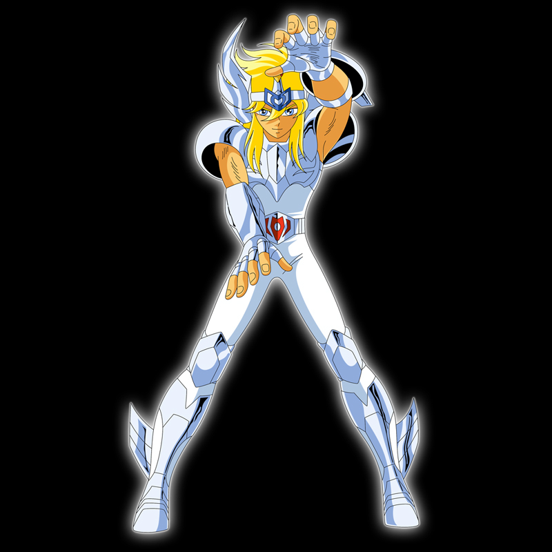

Os Cavaleiros de Bronze
Os 88 Cavaleiros de Athena trajam desde os tempos mitológicos armaduras protegidas pelas constelações do céu para, assim, servir sua deusa e preservar a paz e o amor na Terra. Agora, nos tempos modernos, nasce uma nova Athena e, para que ela não seja assassinada ainda bebê por aqueles que estão ofuscados pelo poder e pela ganância, ela é levada para longe, onde cresce como Saori Kido. Muitos anos depois a vida da jovem Saori Kido cruza com a dos novos Cavaleiros, os meninos órfãs que, à duras penas, conquistaram o direito de trajar as Armaduras de Bronze: Seiya, Shiryu, Hyoga, Shun e Ikki.
Os Cavaleiros de Bronze são a classe mais numerosa dos Cavaleiros de Atena; em tese, adquirem apenas técnicas de luta básicas como Cavaleiros e exercem a função de auxiliares das patentes superiores, os Cavaleiros de Prata e os Cavaleiros de Ouro, os quais supervisionam suas Armaduras. Dentro do Santuário, eles detêm autoridade sobre os soldados rasos.Os Cavaleiros de Bronze são a classe mais numerosa dos Cavaleiros de Atena; em tese, adquirem apenas técnicas de luta básicas como Cavaleiros e exercem a função de auxiliares das patentes superiores, os Cavaleiros de Prata e os Cavaleiros de Ouro, os quais supervisionam suas Armaduras. Dentro do Santuário, eles detêm autoridade sobre os soldados rasos.
Lista de Cavaleiros de Athena
Cavaleiros de Bronze
Seiya de Pégasus
Classificação:
Cavaleiro de Bronze
Armadura:
Armadura de Pégasus
Constelação:
Pegasus
Divindade:
Athena
Técnicas:
- Meteoro de Pégaso
- Cometa de Pégaso
- Turbilhão de Pégaso
Seiya de Pégaso ou Seiya de Pégasus é o protagonista do Mangá/Anime Saint Seiya do autor Musami Kurumada e o Cavaleiro de Bronze da constelação de Pégaso, incumbido com a missão de proteger a deusa Atena nas Guerras Santas. Caracterizado principalmente por nunca desistir de lutar em qualquer situação, por mais impossível ou difícil que possa parecer, ele também é a reencarnação do Cavaleiro de Bronze Tenma de Pégaso e do Primeiro Pégaso, o primeiro homem a ferir o Deus Hades nos tempos mitológicos.
Shiryu de Dragão
Classificação:
Cavaleiro de Bronze
Armadura:
Armadura de Dragão
Constelação:
Draco
Divindade:
Athena
Técnicas:
- Cólera do Dragão
- Último Dragão
Shiryu de Dragão é, um dos 4 Deuteragonistas do Anime Cavaleiros do Zodíaco, o Cavaleiro de Bronze de Dragão, Um dos 100 órfãos reunidos por Mitsumasa Kido para proteger a deusa Athena nas Guerras Santas. Entre os protetores da deusa Atena, ele é o de temperamento mais calmo e de atitude comedida, é sério e reservado. É extremamente honrado e leal aos seus companheiros, disposto a sacrificar sua vida se isso for garantir a segurança de Atena e seus amigos. Teve seu treinamento realizado pelo Mestre Ancião nos Cinco Picos Antigos de Rozan, na China.
Hyoga de Cisne

Classificação:
Cavaleiro de Bronze
Armadura:
Armadura de Cisne
Constelação:
Cygnus
Divindade:
Athena
Técnicas:
- Pó de Diamante
- Trovão Aurora
- Execução Aurora
Hyoga de Cisne é, um dos 4 Deuteragonistas do Anime Cavaleiros do Zodíaco, o Cavaleiro de Bronze de Cisne, um dos 100 órfãos reunidos por Mitsumasa Kido para proteger a deusa Athena nas Guerras Santas. Nas frias terras das Geleiras Eternas, no leste da Sibéria, Hyoga torna-se Cavaleiro tendo como mestre Camus, o Cavaleiro de Ouro de Aquário, que manipula o frio. Seguindo os ensinamentos do seu mestre, ele tenta manter-se racional diante de tudo, mas possui um lado emotivo que não consegue abandonar.
Shun de Andrômeda
Classificação:
Cavaleiro de Bronze
Armadura:
Armadura de Andrômeda
Constelação:
Andrômeda
Divindade:
Athena
Técnicas:
- Corrente de Andrômeda
- Corrente Circular
- Onda Relâmpago
- Corrente Nebulosa
- Tempesta Nebulosa
Shun de Andrômeda é, um dos 4 Deuteragonistas do Anime Cavaleiros do Zodíaco, o Cavaleiro de Bronze de Andrômeda, um dos 100 órfãos reunidos por Mitsumasa Kido para proteger a deusa Athena nas Guerras Santas. É o irmão mais novo de Ikki de Fênix e aprendiz de Albiore de Cefeu. Shun é o Cavaleiro mais frágil dentre os Protagonistas e revela que prefere não lutar, pois odeia ferir outras pessoas, mesmo que elas sejam suas inimigas.
Ikki de Fênix
Classificação:
Cavaleiro de Bronze
Armadura:
Armadura de Fênix
Constelação:
Fênix
Divindade:
Athena
Técnicas:
- Golpe Fantasma de Fênix
- Ave Fênix
Ikki de Fênix é, um dos 4 Deuteragonistas do Anime Cavaleiros do Zodíaco, o Cavaleiro de Bronze de Fênix, um dos 100 órfãos reunidos por Mitsumasa Kido para proteger a deusa Athena nas Guerras Santas. Ikki de Fênix é irmão mais velho do também cavaleiro de bronze, Shun de Andrômeda. Na Ilha da Rainha da Morte, onde foi treinado, viveu o inferno na terra. Tais fatos são suficientes para se tornar um Cavaleiro cruel e cheio de ódio em seu coração. Ikki comandou os Cavaleiros Negros em uma vingança contra Saori Kido, mas se arrependeu e agora luta pela Deusa Atena, ajudando seus amigos e seu irmão sempre que necessário.